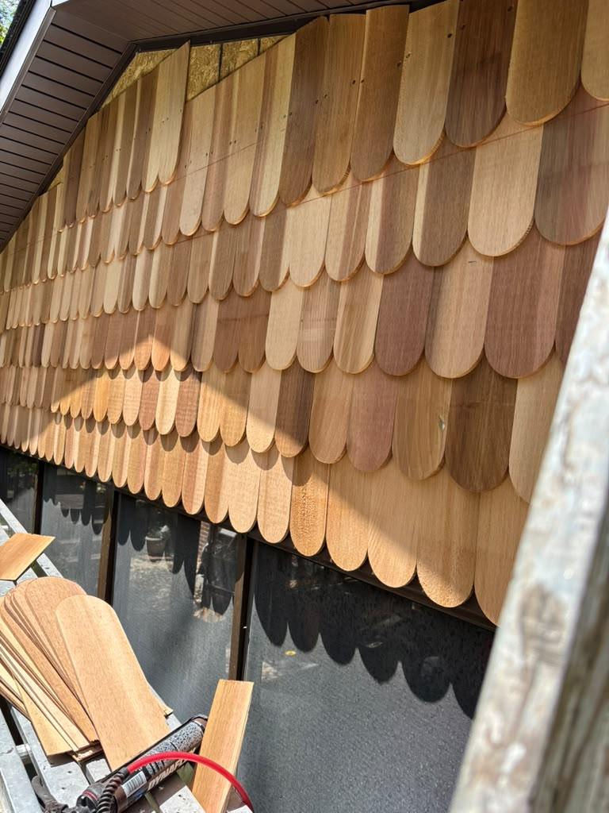
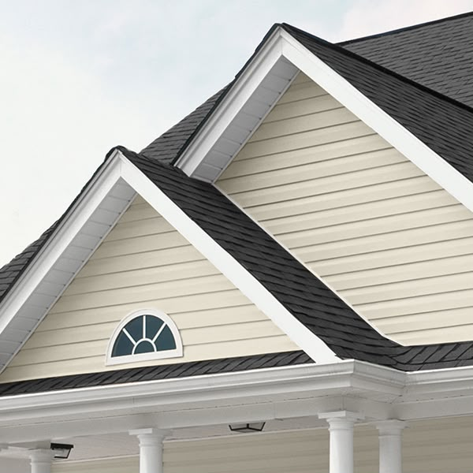
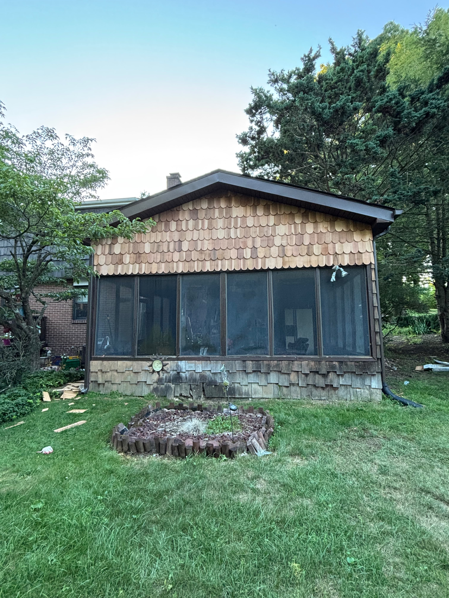
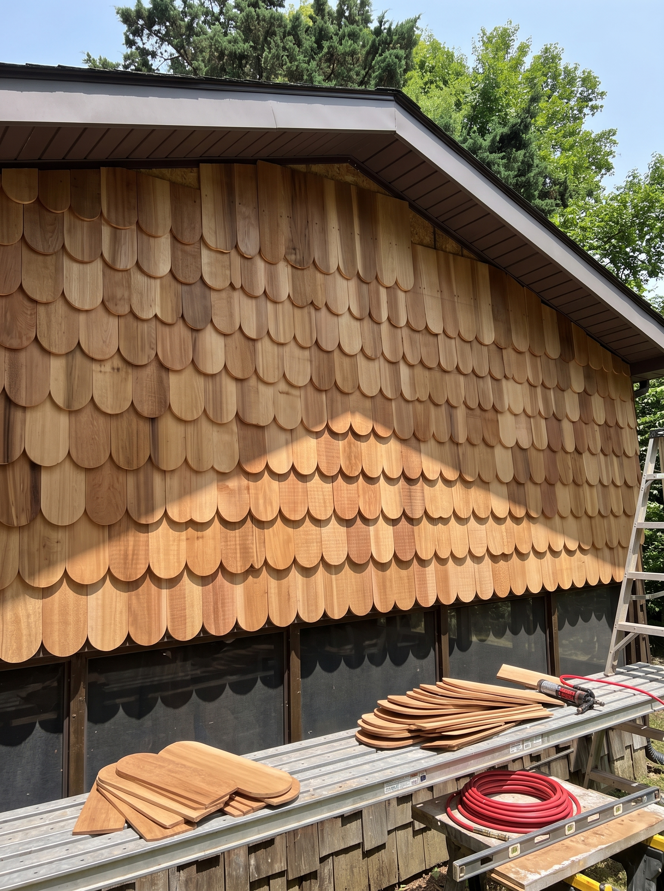

Shake siding
Cedar shake gives an older house the texture it was built with. It costs more up front and wants staining every few years, but nothing else looks like it on a Pittsburgh street.
We install different types of siding. The right one depends on the age of the house, how much upkeep you want, and what you plan to spend.

Cedar shake gives an older house the texture it was built with. It costs more up front and wants staining every few years, but nothing else looks like it on a Pittsburgh street.

The practical choice: lower cost, almost no maintenance, and a wide range of profiles and colours. Modern vinyl looks far better than the panels people remember from the nineties.
Ask us. We work with fiber cement and other materials too — tell us what you have in mind and we'll let you know if we install it.
Ask usSiding is the part of a house everybody judges and almost nobody inspects. It's also the second line of defence after the roof. When a panel cracks or a piece of trim pulls loose, water gets in behind the wall and works quietly for a year or more before anything shows up on the inside.
We install and replace vinyl, cedar shake and fiber cement siding on homes across Pittsburgh. The layer underneath is part of the job, not something to cover up and hope about.
New siding over a properly prepared wall, with house wrap and flashing done in the right order.
Cracked, loose or storm-damaged panels replaced and matched, so the patch doesn't stand out from the street.
Old, faded or failing siding stripped off and replaced, with any water-damaged sheathing fixed first.
Repaired or replaced while the ladders are already up, which saves you a second visit later.
What a siding job covers:
We check every elevation, press for soft spots, and work out whether you need the whole house or three panels on the north wall.
We bring samples and give you the honest trade-offs: cost and maintenance.
Square footage, material, trim details and a price that doesn't move once the wall is open.
Old siding off, damaged sheathing replaced, house wrap and flashing done properly before a single new panel goes up.
Panels hung with the clearance they need to expand and contract, trim finished, and the whole perimeter cleaned up.


Vinyl costs less, needs almost nothing from you, and modern profiles look far better than the ones people remember. Cedar shake costs more and wants staining every several years, but on an older Pittsburgh house it looks right in a way vinyl doesn't quite manage. Fiber cement sits between the two. We'll tell you what we'd put on our own house.
Usually. Profiles get discontinued, so on older houses we may need to source a close match or re-side one full elevation to keep the lines consistent. We'll show you both options before you decide.
Yes, and it's cheaper that way. One mobilisation, one set of ladders and staging, and the roof-to-wall flashing gets done once by the same crew instead of twice by two.
We'll come out, look at the work, and give you a written number. What you do with it is up to you.